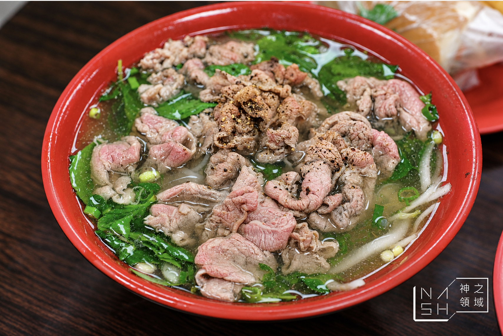
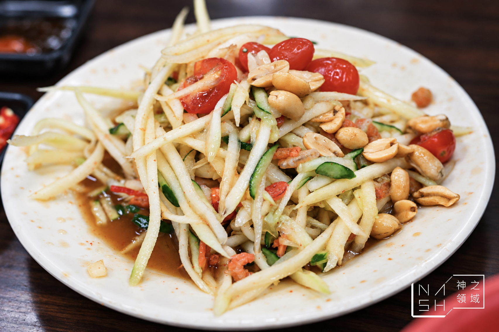

NASH｜阿準越南料理：板橋牛肉河粉與法國麵包


收藏重點
NASH 分享阿準越南料理，推薦牛肉河粉、越式法國麵包及泰式涼拌木瓜；作者稱座位不多，當天開門即客滿，點餐後約等半小時。口味、等待及份量為作者單次用餐經驗，非現況保證。
店家與查核
查核時間：2026-11-09 21:36，台灣時間。Google 地圖是獨立維護的商家資料，非店家即時公告；未實際致電。
- 店名：阿準越南料理，又稱阿準牛肉河粉。
- 地址：新北市板橋區雙十路三段48號；地圖加列柏翠里，門牌一致。
- 電話：0982-785-674，原文與地圖一致。
- 營業時間有差異：原文及其店招照片寫 11:30–14:00、16:30–21:00，原文稱週日公休；地圖當時顯示週一 11:00–14:00、16:30–21:00，並顯示週二 11:00 開始營業。地圖週一開門較原文早半小時；其他日子及週日公休未獨立確認。請先致電確認實際營業時間及臨時公休。
- 交通：原文稱江子翠站1號出口步行約2分鐘，未實測。
原文菜色與歷史價格
原文發布及更新於 2026-10-10：牛肉湯河粉160元、海鮮湯河粉160元、法國麵包120元；主食約140–170元、加麵20元、加肉50元。這是原文當時記載，未獨立查證現價與供應。海鮮河粉依作者描述含豬肉，飲食限制者宜先詢問店家。
圖片與來源
餐點照片來源：NASH／Nash，神之領域，取自下方原文；已逐圖挑選未見人物、車牌的牛肉河粉與涼拌木瓜照片，保留原圖浮水印。公開再利用授權尚未確認，原站頁尾標示 All Rights Reserved；署名不等於取得授權。含人物或車牌的店面照片不公開鏡像。